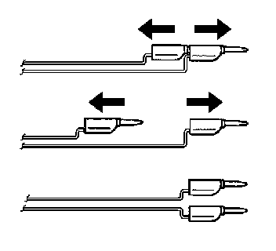
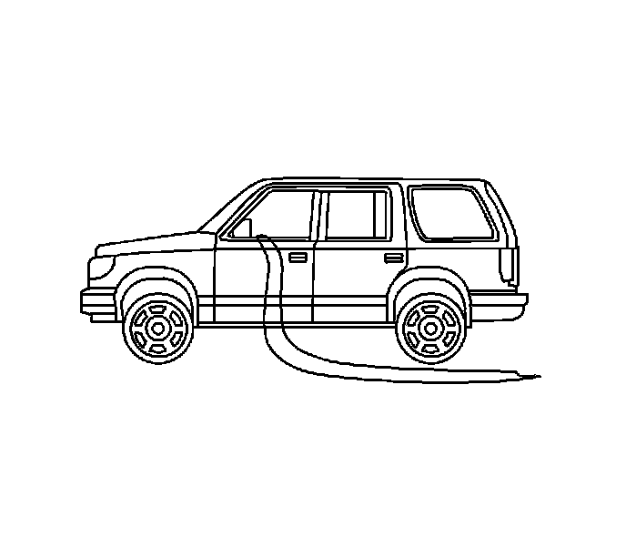

Procedures
PRETENSIONER HANDLING AND SCRAPPING
CAUTION: When carrying an undeployed inflatable restraint seat belt pretensioner:
- Do not carry the seat belt pretensioner by the wires or connector.
- Carry the seat belt pretensioner by the piston tube, keeping hands and fingers away from the cable.
- Make sure the open end of the seat belt pretensioner piston tube points away from you and other people.
- Do not cover the seat belt pretensioner piston tube opening with your hand.
Failure to observe these guidelines may result in personal injury.
Scrapping Procedure
During the course of a vehicles useful life, certain situations may arise which will require the disposal of a live and undeployed seat belt pretensioner. Do not dispose of a live and undeployed seat belt pretensioner through normal disposal channels until the seat belt pretensioner has been deployed. The following information covers the proper procedures for disposing of a live and undeployed seat belt pretensioner. Do not deploy the seat belt pretensioner in the following situations:
- After replacement of a seat belt pretensioner under warranty. The seat belt pretensioner may need to be returned undeployed to the manufacturer.
- If the vehicle is the subject of a Product Liability report, GM1241, related to the SIR system or the seat belt system. If the vehicle is subject to the Product Liability report, do not alter the SIR or seat belt system in any manner.
- If the vehicle is involved in a campaign affecting the seat belt pretensioners. Follow the instructions in the Campaign Service Bulletin for proper SIR handling procedures.
Deployment Procedures
The seat belt pretensioner can be deployed inside or outside of the vehicle. The method used depends upon the final disposition of the vehicle. Review the following procedures in order to determine which will work best in a given situation.
Deployment Outside Vehicle for Seat Belt Pretensioners
Deploy the seat belt pretensioners outside of the vehicle when the vehicle will be returned to service. Situations that require deployment outside of the vehicle include the following:
- Using the SIR diagnostics, it is determined that the seat belt pretensioner is malfunctioning.
- The seat belt pretensioner pigtail, if equipped, is damaged.
- The seat belt pretensioner connector is damaged.
- The seat belt pretensioner connector terminals are damaged.
Deployment and disposal of a malfunctioning seat belt pretensioner is subject to any required retention period.
CAUTION: In order to prevent accidental deployment and the risk of personal injury, do not dispose of an undeployed inflatable restraint seat belt pretensioner as normal shop waste. Undeployed seat belt pretensioners contain substances that could cause severe illness or personal injury if their sealed containers are damaged during disposal. Use the following deployment procedures to safely dispose of an undeployed seat belt pretensioner. Failure to observe the following disposal methods may be a violation of federal, state, or local laws.
TOOLS REQUIRED
- J 39401-B SIR Deployment Fixture
- J 38826 SIR Deployment Harness
- An appropriate pigtail adaptor
1. Turn OFF the ignition.
2. Remove the ignition key.
3. Put on safety glasses.
4. Remove the seat belt pretensioner from the vehicle.
5. When carrying a seat belt pretensioner to the deployment area, keep fingers clear of the seat belt webbing.
6. Clear a space on the ground about 1.85 m (6 ft) in diameter for deployment of the seat belt pretensioner. If possible, use a paved, outdoor location free of activity. Otherwise, use a space free of activity on the shop floor. Make sure you have sufficient ventilation.
7. Make sure no loose or flammable objects are in the area.
8. Place the J 39401-B in the center of the cleared area.
9. Fill the fixture plastic reservoir with water or sand.
10. Mount the seat belt pretensioner (1) in the SIR deployment fixture (3) with the open end facing up using the following mounting method.
- Adjust and secure the J 39401-B arms (4) to the deployment fixture.
- To mount, use the proper size bolt (2) and nut (5) with washers in order to secure the seat belt pretensioner (1) to the deployment fixture brackets.
- Securely tighten all fasteners prior to deployment.

11. Inspect the J 38826 and the appropriate pigtail adapter for damage. Replace as needed.
12. Short the 2 SIR deployment harness (1) leads together using 1 banana plug seated into the other.
13. Connect the appropriate pigtail adapter (2) to the SIR deployment harness.
14. Extend the SIR deployment harness and adapter to full length from the deployment fixture.
15. Connect the seat belt pretensioner connector (1) to the adapter (2) on the deployment harness (3).
16. IMPORTANT: When deploying a seat belt pretensioner, the rapid expansion of gas is very loud. Notify the people in the immediate area that a seat belt pretensioner will be deployed.
Clear the area of people.

17. Separate the 2 banana plugs on the SIR deployment harness.
18. Place a 12 volt minimum/2 amp minimum power source, such as a vehicle battery, near the shorted end of the harness.
19. Connect the SIR deployment harness wires to the power source. Seat belt pretensioner deployment will occur when contact is made.
20. Disconnect the SIR deployment harness from the power source after the seat belt pretensioner deploys.

21. Seat one banana plug into the other in order to short the deployment harness leads.
22. If the seat pretensioner did not deploy, disconnect the adapter and discontinue the procedure. Contact the Technical Assistance Group. Otherwise, proceed to the following steps.
23. Put on a pair of shop gloves.
24. Disconnect the pigtail adapter from the seat belt pretensioner as soon as possible.
25. Dispose of the deployed seat belt pretensioner through normal refuse channels.
26. Wash hands with a mild soap.
Deployment Inside Vehicle - Vehicle Scrapping Procedure
Deploy the seat belt pretensioners inside of the vehicle when destroying the vehicle or when salvaging the vehicle for parts. This includes but is not limited to the following situations:
- The vehicle has completed its useful life.
- Irreparable damage occurs to the vehicle in a non-deployment type accident.
- Irreparable damage occurs to the vehicle during a theft.
- The vehicle is being salvaged for parts to be used on a vehicle with a different VIN as opposed to rebuilding as the same VIN.
1. Turn OFF the ignition.
2. Remove the ignition key.
3. Put on safety glasses.
4. Remove all loose objects from the front seats.
5. Disconnect the seat belt pretensioner connector.
6. Cut the seat belt pretensioner harness connector out of the vehicle, leaving at least 16 cm (6 in) of wire at the connector.
7. Strip 13 mm (0.5 in) of insulation from each of the connector wire leads.

8. Cut two 6.1 m (20 ft) deployment wires from a 0.8 mm (18 gage) or thicker multi-strand wire. These wires will be used for the seat belt pretensioner deployment harness.
9. Strip 13 mm (0.5 in) of insulation from both ends of the wires cut in the previous step.
10. Twist together one end from each of the wires in order to short the wires. Deployment wires shall remain shorted, and not connected to a power source until you are ready to deploy the seat belt pretensioner.

11. Twist together one connector wire lead to one deployment wire.
12. Inspect that the previous connections is secure.
13. Bend flat the twisted connection.
14. Secure and insulate the connection using electrical tape.
15. Twist together, bend, and tape the remaining connector wire lead to the remaining deployment wire.
16. Connect the deployment harness to the seat belt pretensioner connector.

17. Route the deployment harness out of the driver side of the vehicle.
18. Disconnect the seat belt pretensioner connector.
19. Cut the seat belt pretensioner connector out of the vehicle, leaving at least 16 cm (6 in) of wire at the connector.
20. Strip 13 mm (0.5 in) of insulation from each of the connector wire leads.
21. Cut two 6.1 m (20 ft) deployment wires from a 0.8 mm (18 gage) or thicker multi-strand wire. These wires will be used for the seat belt pretensioner deployment harness.
22. Strip 13 mm (0.5 in) of insulation from both ends of the wires cut in the previous step.
23. Twist together one end from each of the wires in order to short the wires. The deployment wires are to remain shorted, and not connected to a power source until you are ready to deploy the seat belt pretensioner.
24. Twist together one connector wire lead to one deployment wire.
25. Inspect that the previous connection is secure.
26. Bend flat the twisted connection.
27. Secure and insulate the connection using electrical tape.
28. Twist together, bend, and tape the remaining connector wire lead to the remaining deployment wire.
29. Connect the deployment harness to the seat belt pretensioner connector.
30. Route the deployment harness out of the passenger's side of the vehicle.
31. Completely cover the windshield and the front door openings with a drop cloth.
32. Deploy each deployment loop one at a time.
33. Stretch out all of the deployment harness wires on the left and right side of the vehicle to their full length.
34. Place a power source, 12 volt minimum/2 amp minimum, such as a vehicle battery, near the shorted end of the harnesses.
35. Separate one set of wires and touch the wire ends to the power source in order to deploy the seat belt pretensioners.
36. Disconnect the deployment harness from the power source and twist the wire ends together.
37. Continue the same process with the remaining deployment harnesses that are available.
38. Remove the drop cloth from the vehicle.
39. Disconnect all harnesses from the vehicle.
40. Discard the harnesses.
41. Scrap the vehicle in the same manner as a non-SIR equipped vehicle.
42. If one or more of the seat belt pretensioners did not deploy, perform the following steps to remove the undeployed seat belt pretensioner from the vehicle, refer to Seat Belt Retractor Pretensioner Replacement - Front.
43. Call the Technical Assistance Group for further assistance.